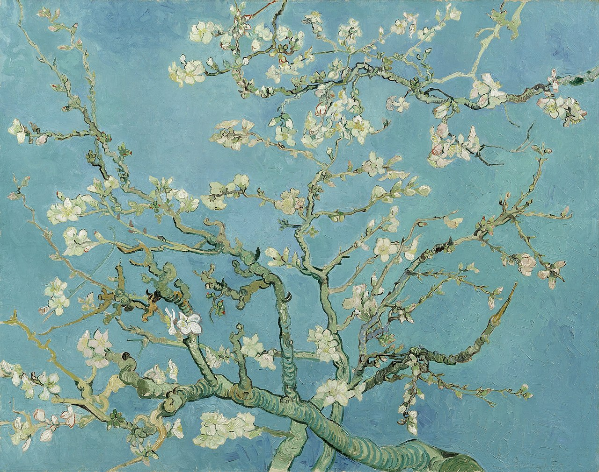

No sul da França, nove meses antes de ser hospitalizado, Em Arles, Van Gogh produziu outras obras famosas, como Quarto em Arles e Terraço do Café à Noite.
Nesse quadro feito a pintura sobre óleo, a obra retrata a paisagem vista à noite à beira do Ródano, um importante rio europeu.

Amendoeira
Em 'Amendoeira em Flor' o artista Van Gogh escolheu uma perpectiva relativamente interessante, como se estivesse deitado de costas e olhado para cima, pintou os galhos visto de baixo